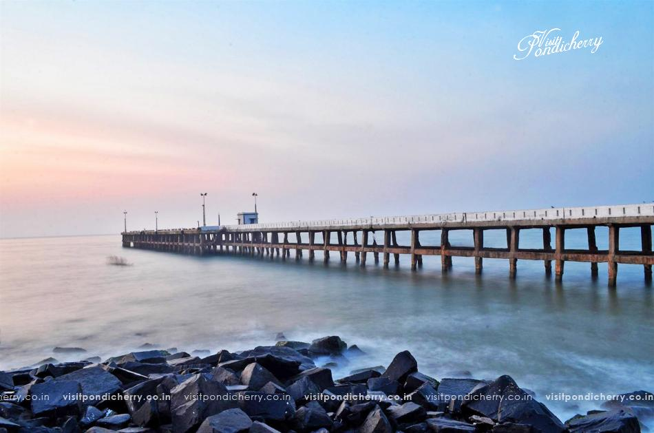

Travel Around The World!
Take Your camera and capture the beauty of the world



Take Your camera and capture the beauty of the world
You can visit the best beaches here like Mahe Beach, Paradise Beach, Serenity Beach, Promenade Beach and more. You can also try scuba diving in Pondicherry and spend some time under water exploring the aquatic life and organisms. Beaches in Pondicherry are aplenty and you can spend days visiting all the marvelous beaches here. These are the most sought-after places to visit in Pondicherry, and tourists and beach lovers flock here to party, indulge in water sports or simply spend a day swimming, basking in the sun or having a picnic. If you love building sandcastles, spending time just watching the waves crash, walking on the shores, enjoying a romantic evening with your partner,
Located in Viluppuram district, Auroville is a unique township built on the concept of a ‘Universal Town’. It was founded in 1968 by Mirra Alfassa – a disciple of Sri Aurobindo. The town was conceived by her with a notion to allow humanity to prosper beyond the boundaries of gender, religion, and politics. This experimental town is home to people from around 195 nationalities from across the globe. Auroville is a popular destination near Pondicherry for those in search of tranquility. The main attraction of Auroville is the beautiful structure of Matrimandir, fondly referred to as the ‘soul of the city’. It is located in the center of the town, surrounded by lush green grasslands and forests. The pleasant weather and amiable residents make your trip to Auroville worthwhile.
Eglise de Notre Dame des Anges or Our Lady of Angels Church is the fourth oldest church and one of the best places to see in Pondicherry. Another interesting fact about this church is that it is the only one that offers mass in 3 different languages, namely French, Tamil and English. Built extraordinarily in the Greco-Roman architectural style, and home to the statue of Joan of Arc donated to this church by the Mayor of Puducherry in 1919, Eglise de Notre Dame des Anges is one of the most important religious sites in Pondicherry and a must-see for every tourist for a spiritual experience.
Your Pondicherry trip is incomplete without a visit to Sri Aurobindo Ashram. Started by a group of disciples of Shri Aurobindo after he chose to retire in 1910, this ashram was handed over to the spiritual collaborator Mirra Alfassa, commonly referred to as the Mother. The ashram is one of the most spiritual and tranquil places to visit in Pondicherry and is frequented by tourists, spiritual aspirants and locals who wish to learn more about Sri Aurobindo and the Mother, who spent their lives here and also to practice or learn Integral Yoga, a form of yoga that aims to transform human life into the divine life.
The French War Memorial was built in the memory and to pay homage to thousands of soldiers who lost their lives fighting during World War I. This memorial is situated in Goubert Avenue, opposite to Gandhi Statue, and is frequented by several tourists who pay a visit here. Every year on the 14th of July, on the occasion of French National Day (Bastille Day), the French War Memorial is bedecked with lights and tourists and the localities visit this place to pay their respect. One of the most important places to visit in Pondicherry, this memorial is an architectural wonder that stands tall recounting untold stories of the war.
The French War Memorial was built in the memory and to pay homage to thousands of soldiers who lost their lives fighting during World War I. This memorial is situated in Goubert Avenue, opposite to Gandhi Statue, and is frequented by several tourists who pay a visit here. Every year on the 14th of July, on the occasion of French National Day (Bastille Day), the French War Memorial is bedecked with lights and tourists and the localities visit this place to pay their respect. One of the most important places to visit in Pondicherry, this memorial is an architectural wonder that stands tall recounting untold stories of the war.